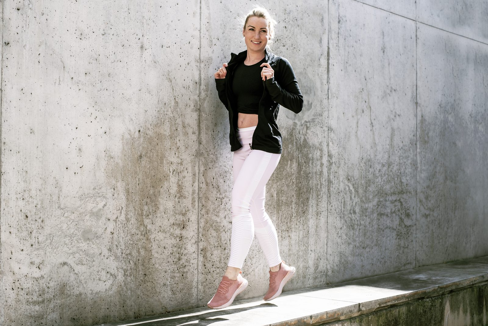
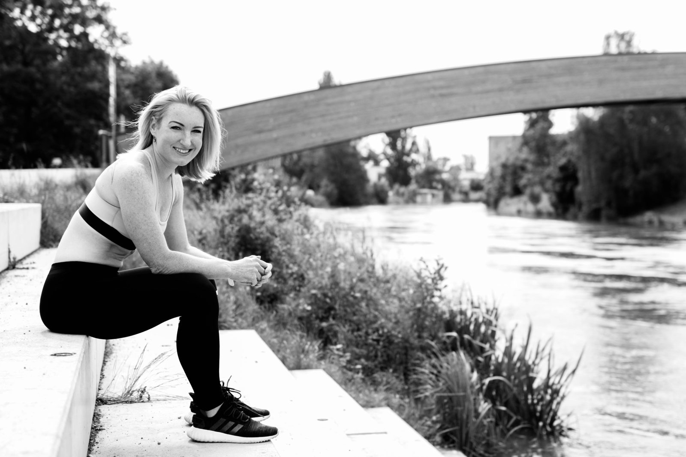

Překážkové běhy / OCR
Kondiční kruhový trénink v army stylu, max. 10 osob na lekci. Příprava na Army Run.
Praha · OCR · individuální trénink
Ráda sním sny, abych si je splnila, a objevuji překážky, abych je zdolala. Postavím Ti trénink i jídelníček tak, aby měly smysl — ať začínáš, nebo míříš na Army Run.

Mgr. Nikola Bartáková · FTVS
Vyber si formu, která Ti sedne. Vše se dá kombinovat — trénink, jídelníček i technika běhu.
Kondiční kruhový trénink v army stylu, max. 10 osob na lekci. Příprava na Army Run.
Čas věnovaný pouze Vám — plán, technika a zpětná vazba na každém tréninku.
Mým cílem je naučit Tě správně jíst. Žádné hladovění, návod na chutný a zdravý život.
Funkční cvičení pro pohyb bez bolesti — vhodné bez ohledu na věk a kondici.
Kurz, po kterém běháš ekonomičtěji, déle a bez bolesti kolen.
Bruslení od 4 let, pohybové kurzy pro prvňáčky a sportovní tábory v létě.

Jsem Nikola, absolventka FTVS a trenérka, která věří na jednoduché věci dělané dobře. Trénuji lidi, kteří chtějí být silnější v běžném životě, i ty, co míří na překážkový závod. Kromě tréninku učím i to, co se děje v kuchyni — bez zázračných diet.
Ráda sním sny, abych si je splnila
8 týdnů, 3 tréninky v týdnu, video ke každému cviku. Pro rozjezd bez zranění.
Silový a kondiční blok mířený na překážky — hmaty, lezení, běh do kopce.
Balíček tréninku a stravy s videi. Nejčastěji volená kombinace.
Napiš mi, co chceš zvládnout. Zbytek vymyslím já.